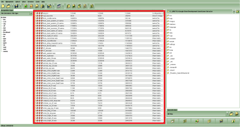
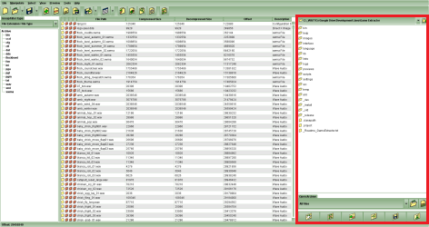
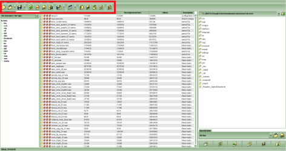

The Game Extractor Interface
Back to Index
The interface of Game Extractor only contains 3 main areas, which keeps it simple, and removes the need for multiple screens and large popup boxes.
1. The big box in the middle is the File List. When you open an archive, the File List will display the name, size, and description of every file in the archive. Whenever you need to deal with specific files, or the archive as a whole, you will do it here.

The highlighted section shows the File List
2. The most important and powerful section is the box on the right: the Side Panel. The Side Panel is used to perform all the main functions of Game Extractor, including reading archives and previewing files. No matter what you need to do, the Side Panel will always be the place to go.

The highlighted section shows the Side Panel
3. The buttons and menus at the top load different screens into the Side Panel. For example, if you want to open an archive, click the Open Archive button and the Side Panel will change. You can also perform the same thing using the menus.

The highlighted section shows the Buttons and Menus
1. The big box in the middle is the File List. When you open an archive, the File List will display the name, size, and description of every file in the archive. Whenever you need to deal with specific files, or the archive as a whole, you will do it here.
2. The most important and powerful section is the box on the right: the Side Panel. The Side Panel is used to perform all the main functions of Game Extractor, including reading archives and previewing files. No matter what you need to do, the Side Panel will always be the place to go.
3. The buttons and menus at the top load different screens into the Side Panel. For example, if you want to open an archive, click the Open Archive button and the Side Panel will change. You can also perform the same thing using the menus.